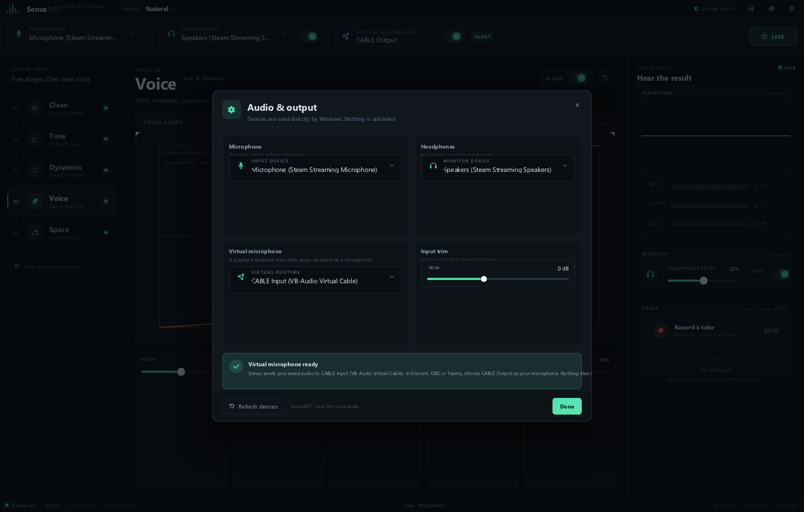

Input and output
Choose what Sonus hears, and where it goes.
Sonus has three audio destinations: your headphones, a virtual microphone for other apps, and the recorder. They all receive the same processed voice.
Choosing devices
Use the two pickers in the top bar for the everyday choice. Open Settings when you need the full device list or want to select the virtual output explicitly.

- Microphone — the physical microphone Sonus captures.
- Headphones — the device used for monitoring and take playback. Choosing headphones avoids acoustic feedback.
- Virtual microphone — the playback side of the virtual cable. Sonus sends processed audio here.
- Input trim — clean gain before the noise stage. Use it if the input meter stays very low or clips constantly.
Monitoring in headphones
Monitoring lets you hear the processed voice while you speak. It is independent of the virtual microphone, so you can mute yourself without taking Sonus offline for everyone else.
- Select your headphones. Use the Headphones picker in the top bar or in Settings.
- Turn on monitoring. Use the switch next to the Headphones picker, or the switch in the Monitor card.
- Press TEST. A short chime plays through the selected headphones. If you can hear it, the route is working.
- Set the level. Use the headphone slider. This level does not affect the virtual microphone or the recording.
The virtual microphone
Windows does not let an ordinary application create a recording endpoint. Sonus therefore uses the free, signed VB-CABLE driver, detects it automatically, and sends the processed voice to its input. Other applications choose the matching output.
One-time setup
- Open Settings. Use the gear icon in the top bar.
- Download & install. In the Virtual microphone section, press Download & install. Sonus downloads the official VB-CABLE package and opens the official installer.
- Restart Windows. The installer asks for a reboot to finish installing the audio device.
- Reopen Sonus. The virtual microphone should show READY and the virtual switch should be on.
- Choose it in your other app. In Discord, OBS, Teams or a game, select CABLE Output (VB-Audio Virtual Cable) as the microphone.
What travels through it
The virtual microphone receives the same processed signal as the headphone monitor. There are not two processing chains. Turning monitoring down or muting it does not change what other applications hear.
If a device disappears
If Windows removes the microphone, Sonus stops capture cleanly and reports the problem instead of freezing. Reconnect the device, then press Refresh devices in Settings.
- No microphone in the list — check Windows privacy permissions and that the device is enabled in Sound settings.
- Monitoring is silent — choose headphones, enable monitoring and press TEST. Check the Windows volume for that endpoint.
- Other apps cannot see Sonus — make sure VB-CABLE is installed, the virtual switch is on, and the other app is using CABLE Output.
- Virtual output is missing — restart Windows after installing VB-CABLE, then open Settings and press Refresh devices.